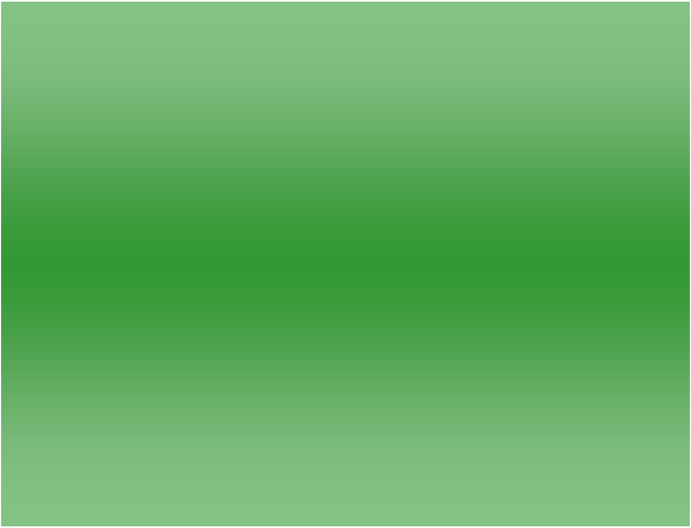
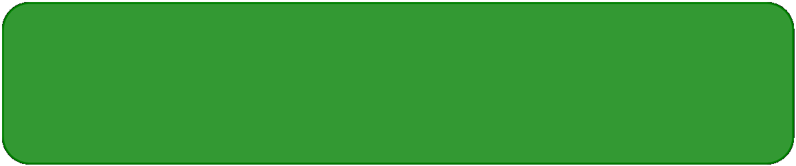
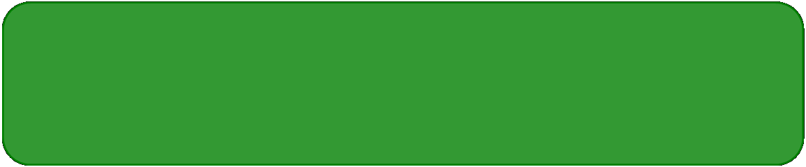

Welcome to the home page of Dinixa AS!
|
Dinixa AS is a service made by www.renatogr.cf which is used to provide information and data to programs, apps and games made by www.renatogr.cf. For example: www.renatogr.cf Desktop fully relies on Dinixa AS to function at all. Almost every app, program or game made by www.renatogr.cf that needs to get some data from the internet uses Dinixa AS. There is also Dinixa ASi but that service is still in a very very early stage. ASi is a service that is used for things that need to send and receive information instantly. Like multiplayer games, chats, live drawing boards, etc.
|

XDas is slowly coming online!
|
XDas is like AS but it can be updated faster than AS but client can not give it information like ASi so its like a hybrid between AS and ASi. It is still in a extremely early stages and is not always online like AS is but it is currently used only for testing. One major advantage that XDas has over AS is the speed that changes take place. As soon as something gets published on XDas it can be accessed by the client while with AS it takes a minute or two for changes to take place. This can be useful for a notification system of some kind, chat information, etc. Also if we combine AS, ASi and XDas we can get an amazing system, users will be able to edit their accounts in the apps, chatting with other users will be possible, and a lot and lot more features would be available. But the way thing are currently going, we will probably have only AS and maybe just maybe XDas.
|
|